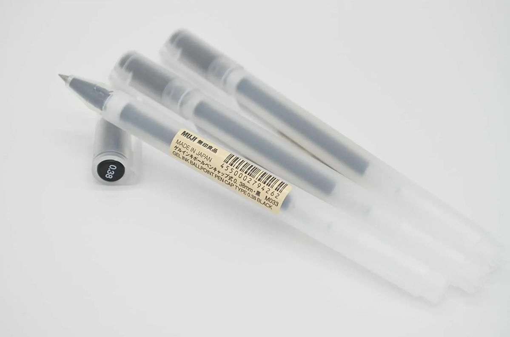
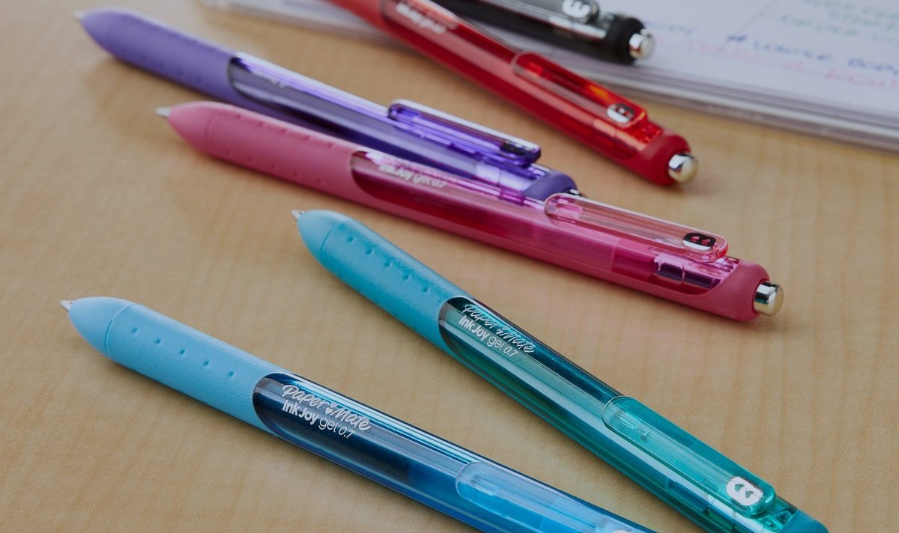
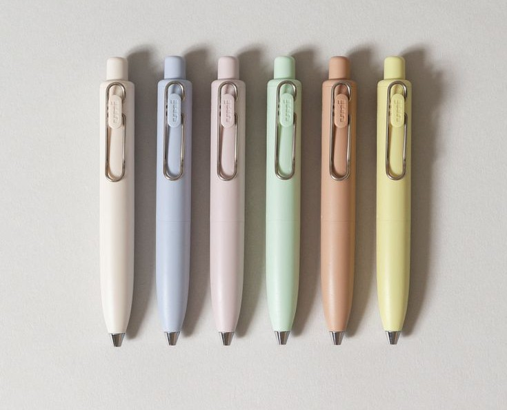

I will be ranking the following pens based on quality, durability, lack of bleed-through paper, and smudge resistance. From opinionated likes and dislikes, i will create a 'bottom line' and rating based on real research as well- raw opinions and honest reviews. I selected three people, some with fair knowledge, little, and no knowledge when it comes to stationary, pens.
MUJI Gel Ink Pen

Likes
Muji has become one of my personal favorites, its smooth inkflow and comfortable grip holds up to minimalistic appearance. These pens can be offered in different colors and ballpoint mm from 0.3, 0.5, and 0.38. Apart from its writing style, this brand holds up to being equally affordable and of high-quality.
Dislikes
Despite my appeal to the brand and stationary they offer, i find the pen itself not to have a softer exterior material. I like pens with texture, a more sturdier grip. Sometimes i tend to add 'pencil grippers' onto the pen so it will not strain my hand whenever i write for a long period of time.
Second Opinions
After proper testing and research, i found that some agreed to the pens smooth writing while also pointing out that "as long as it gets the writing done is all that matters". Some enjoyed the pens colors and mentioned the lack of smudging, complementing the brand for their fine-lining. In that same remark, others argued that the pens seem too 'plain' and not as comfortable as other pens.
Bottom Line
Based on opinons from others and my own personal ideals, The pen is great for note-taking and on the go travel. It does not smudge and holds up to it's fine lining but not ideal for those to prefer high-quality durability. It does not bleed through paper and overall a great 4 stars.
Paper Mate Ink-Joy

Likes
I picked up my first pack of paper mate pens because of the appearance, its variety of colors and the hearts as a signature to the brand. I love the pens texture, a smooth rubber while also keeping a comfortable grip. It does not bleed through and also does not smudge, its writing pallpoint is a 0.7mm- simple enough where it is not to thin nor too thick in writing. There is slight durability and props to is overal appeal. I personally love these pens, my everyday 'travel pens' because i like the smooth writing and consistency with its ink.
Dislikes
These pens are not as flashy as other pens, nor is it minimalitic. It is slightly towards the more expensive side, coming in different quantity packs. There is not many types of styles to the pen, remainingn consistent as a brand for its quality and pricing.
Second Opinions
There were mixed opinions on the pen with all aggreeing to the pens clean writing and smooth writing, some praised the pen for its grip how it works great for everyday use. Others argued that over versions coming from the same brand bleed through paper, mentioning it is not as 'enticing' as other pens they've come across.
Bottom Line
Papermate pens are highly rated for its consistency and clean writing, making it great for everyday use. These pens are great for anyone, especially college students. Despite its 'slightly expensive' approach, the pens brand holds up to its quality and great writing. I'd give it a full 5 stars for its quick drying and reliability.
Uni-Ball One P Gel Pen

Likes
Uniball has a variety of pen types that i've come to enjoy and go as far as to consider one of my 'favorites'. These pens specificially, the Uni-Ball one P Gel Pens, caught my attention by the theme of colors. Their variety of sleek and neutral colored pens are fair for the price. I liked the pens appearance, more less the ballpoint but can compliment it's smooth writing.
Dislikes
Despite my efforts, i noticed the occasional ink blobs and slight ink smudges. When pressed too deep onto the paper, the ink tends to thicken up, causing inconsistency when writing with the pen.
Second Opinions
There were many positive opinions for this brand such as affordability, it's quality makes up for the price. Some complimented the appearance and pointing out strong and bold the clip makes the overall pen. The clip has been highly rated, its smooth writing and bold ink while also arguing that it is not as reliable as they'd hope
Bottom Line
This pen is great for those who enjoy bold writing but as it concludes, it's not for everyone (myself included). This pen is popular for it's smooth writing but still smudges. It has great durability, not reliable on consistency ink, yet overall great for those searching for a 'bold' ink flow.